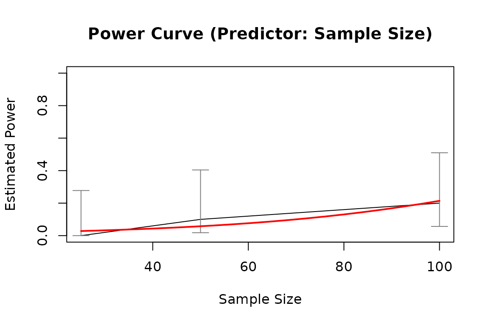
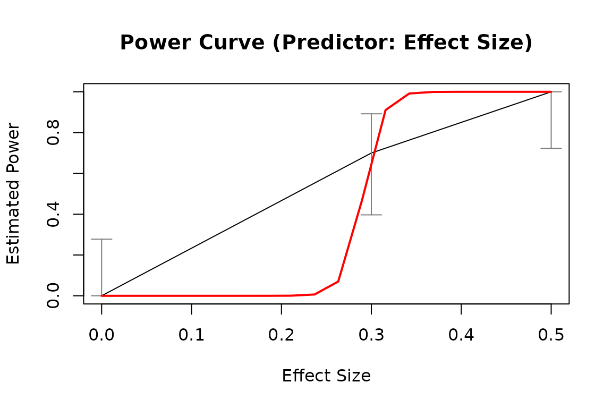

Estimate the relation between power and a characteristic, such as sample size or population effect size (population value of a model parameter).
Usage
power_curve(
object,
formula = NULL,
start = NULL,
lower_bound = NULL,
upper_bound = NULL,
nls_args = list(),
nls_control = list(),
verbose = FALSE,
models = c("nls", "logistic", "lm")
)
# S3 method for class 'power_curve'
print(x, data_used = FALSE, digits = 3, right = FALSE, row.names = FALSE, ...)Arguments
- object
An object of the class
power4test_by_norpower4test_by_es, which is the output ofpower4test_by_n()orpower4test_by_es().- formula
A formula of the model for
stats::nls(). It can also be a list of formulas, and the models will be fitted successively bystats::nls(), with the first model fitted successfully adopted. The response variable in the formula must be namedreject, and the predictor namedx. Whetherxrepresentsnoresdepends on the class ofobject. IfNULL, the default, it will be determined internally based on the type ofobject.- start
Either a named vector of the start value(s) of parameter(s) in
formula, or a list of named vectors of the starting value(s) of the list of formula(s). IfNULL, the default, they will be determined internally.- lower_bound
Either a named vector of the lower bound(s) of parameter(s) in
formula, or a list of named vectors of the lower bound(s) for the list of formula(s). They will be passed tolowerofstats::nls(). IfNULL, the default, it will be determined internally based on the type ofobject.- upper_bound
Either a named vector of the upper bound(s) of parameter(s) in
formula, or a list of named vectors of the upper bound(s) for the list of formula(s). They will be passed toupperofstats::nls(). IfNULL, the default, it will be determined internally based on the type ofobject.- nls_args
A named list of arguments to be used when calling
stats::nls(). Used to override internal default, such as the algorithm (default is"port"). Use this argument with cautions.- nls_control
A named list of arguments to be passed the
controlargument ofstats::nls(). The values will override internal default values, and also overridenls_args. Use this argument with cautions.- verbose
Logical. Whether messages will be printed when trying different models.
- models
Models to try. Support
"nls"(fitted bynls()),"logistic"(fitted byglm()), and"lm"(fitted bylm()). By default, all three models will be attempted, in this order.- x
A
power_curveobject.- data_used
Logical. Whether the rejection rates data frame used to fit the model is printed.
- digits, right, row.names
Arguments of the same names used by the
printmethod of adata.frameobject. Used whendata_usedisTRUEand the rejection rates data frame is printed.- ...
For the
printmethod ofpower_curveobjects, they are optional arguments to be passed toprint.data.frame()when printing the rejection rates data frame.
Value
It returns a list which is a
power_curve object, with the
following elements:
fit: The model fitted, which is the output ofstats::nls(),stats::glm(), orstats::lm().reject_df: The table of reject rates and other characteristics, which is generated byrejection_rates().predictor: The predictor or the power curve, ether"n"(sample size) or"es"(population effect size).call: The call used to run this function.
The print method of power_curve
object returns x invisibly. Called
for its side-effect.
Details
It retrieves the information
from the output of
power4test_by_n() or
power4test_by_es(), and
estimate the power curve: the
relation between the characteristic
varied, sample size for
power4test_by_n() and the
population effect size for
power4test_by_es(), and the
rejection rate of the test conducted
by power4test_by_n() or
power4test_by_es(). This
rejection rate is the power when the
null hypothesis is false (e.g., the
population value of the effect size
being tested is nonzero).
The model fitted is not intended to
be a precise model for the relation
across a wide range. It is only a
crude estimate based on the limited
number of values of the
characteristic (e.g., sample size)
examined, which can be as small as
four or even smaller. The model is
intended to be
used for only for the range covered,
and for estimating the probable
sample size or effect size with a
desirable level of power. This value
should then be studied by higher
precision through simulation
using functions such as
power4test().
These are the models to be tried, in the following order:
One or nonlinear models, to be fitted by
stats::nls(). If several models are specified, all will be fitted and the one with the smallest deviance will be used.If all the nonlinear models failed, for whatever reason, a logistic regression will be fitted by
stats::glm()to predict the binary significant test results.If the logistic model also failed, for whatever reason, a simple linear regression model will be fitted. Although the power curve is nonlinear across a wide range of, say, sample size, a linear model can still be a good enough approximation for a narrow range of the predictor.
The output can then be plotted to
visualize the power curve, using
the plot method (plot.power_curve())
for the output
of power_curve().
This function can be used directly,
but is also used internally by
functions such as x_from_power().
See also
power4test_by_n() and power4test_by_es()
for the output supported by
power_curve(), plot.power_curve()
for the plot method and
predict.power_curve()
for the predict method of the output
of power_curve().
Examples
# Specify the population model
model_simple_med <-
"
m ~ x
y ~ m + x
"
# Specify the effect sizes (population parameter values)
model_simple_med_es <-
"
y ~ m: l
m ~ x: m
y ~ x: s
"
# Simulate datasets to check the model
sim_only <- power4test(nrep = 10,
model = model_simple_med,
pop_es = model_simple_med_es,
n = 50,
fit_model_args = list(fit_function = "lm"),
do_the_test = FALSE,
iseed = 1234,
parallel = FALSE,
progress = FALSE)
# By n: Do a test for different sample sizes
out1 <- power4test_by_n(sim_only,
nrep = 10,
test_fun = test_parameters,
test_args = list(par = "y~x"),
n = c(25, 100, 200, 1000),
by_seed = 1234,
parallel = FALSE,
progress = FALSE)
pout1 <- power_curve(out1)
pout1
#> Call:
#> power_curve(object = out1)
#>
#> Predictor: n (Sample Size)
#>
#> Model:
#>
#> Call: stats::glm(formula = reject ~ x, family = "binomial", data = reject1)
#>
#> Coefficients:
#> (Intercept) x
#> -1.550280 0.004213
#>
#> Degrees of Freedom: 39 Total (i.e. Null); 38 Residual
#> Null Deviance: 54.55
#> Residual Deviance: 38.37 AIC: 42.37
plot(pout1)

# By pop_es: Do a test for different population values of a model parameter
out2 <- power4test_by_es(sim_only,
nrep = 10,
test_fun = test_parameters,
test_args = list(par = "y~x"),
pop_es_name = "y ~ x",
pop_es_values = seq(0, .7, .15),
by_seed = 1234,
parallel = FALSE,
progress = FALSE)
pout2 <- power_curve(out2)
pout2
#> Call:
#> power_curve(object = out2)
#>
#> Predictor: es (Effect Size)
#>
#> Model:
#>
#> Call: stats::glm(formula = reject ~ x, family = "binomial", data = reject1)
#>
#> Coefficients:
#> (Intercept) x
#> -3.347 17.231
#>
#> Degrees of Freedom: 49 Total (i.e. Null); 48 Residual
#> Null Deviance: 65.34
#> Residual Deviance: 25 AIC: 29
plot(pout2)
